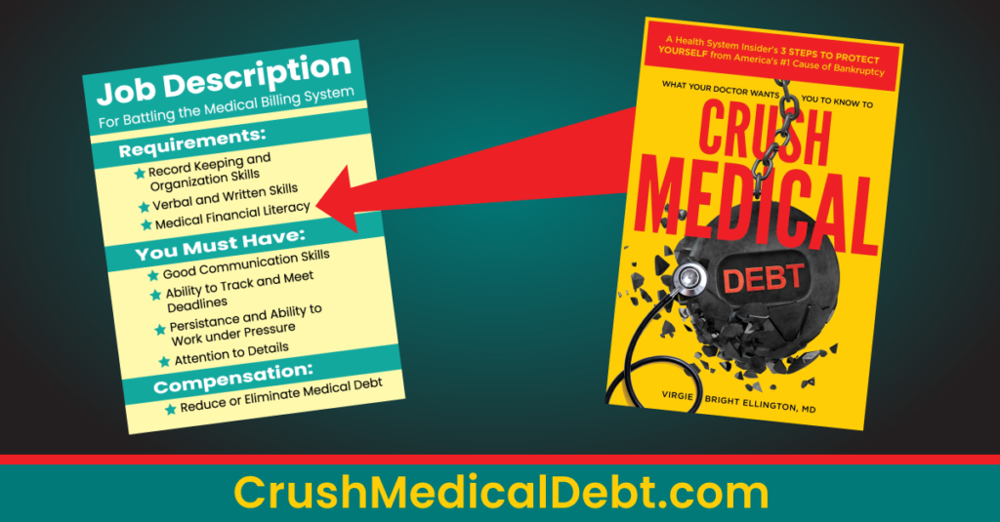

Battling the healthcare billing system and insurance companies can be extremely stressful. The time and energy required for disputing overpriced or erroneous bills, writing letters, obtaining records or preauthorizations, appealing claim denials, dealing with bill collectors, and making phone calls can feel like you’re working a stressful job you never even applied for! It can be especially frustrating when you are sick, needing time off to rest rather than fighting an overly complicated and unfair system. However, if you don’t fight, you could end up drowning in medical debt, even believing you have to file for bankruptcy. So, what can you do to make this unwanted but crucial job less stressful? What are some tips for communicating with the healthcare billing system?
Be Polite
It is easy to lose our cool when someone tries to rip us off or take advantage of us when we’re vulnerable. The healthcare system’s proven track record for turning patients into healthcare cost victims strikes terror in anyone who wants to avoid debt. The time spent navigating automated telephone menus and watching the battery run down on your phone while waiting on hold doesn’t make the process any less frustrating. Finally, billing office and insurance representatives can sometimes be unhelpful. They may not have the answers you need, give erroneous answers, or provide information that differs from what another representative told you.
Take a deep breath and realize these workers are just trying to do their jobs, have varied experience levels, and often want to help if they can. Letting your emotions get the best of you doesn’t help anyone in this situation, especially not your stress level!
Get Organized
Before contacting your insurance company, provider billing department, or any debt collectors involved, etc., have your relevant documents in front of you. For example, when calling your insurance company, they will ask for the information on your insurance card such as your member ID. You will also need the documents showing the items you are calling about, such as your billing invoice, letter, or insurance statement. Finally, write down your list of questions so you can handle everything in one phone call.
Depending on the issue, you may be able to resolve it through the company’s website or member portal quicker than making phone calls. Written communication is easier for some people and leaves a paper trail (or email trail) of evidence.
Keep Good Records and Pay Attention to Deadlines
Fighting the healthcare billing and insurance system is a long game that requires you to be a good record keeper. Pay special attention to deadlines and timelines. Procrastination will leave you on the hook to pay unfair and outrageous medical bills that can eventually destroy your credit and leave you with crippling debt.
The letters and statements you receive will often include deadline information. In addition, there are helpful federal guidelines to keep in mind such as:
- 12 months to dispute, negotiate, and settle your unpaid medical debt over $500 in collections before it can hit your credit report
- 240 days (about 8 months) to apply for nonprofit hospital financial assistance
- 180 days (6 months) to file an internal insurance claim appeal
Additional state laws and the guidelines of your specific policy will give you additional deadlines and time requirements you must diligently meet.
Maintain a Communications Log
Good communication records are vital, whether in a paper journal or spreadsheet. A record of all phone calls and correspondence will help keep you organized and protect your finances with every battle you encounter with the system.
You will find this record helpful:
- when requesting itemized bills
- escalating calls
- appealing claim denials
- filing formal complaints with state and federal regulators
- engaging with debt collectors
- communicating with credit bureaus
- fighting in a lawsuit
Some Items You Might Want to Include in Your Log
Medical Bill Invoice Number, Provider, and Date of Service
Including these items will prevent you from confusing one invoice or doctor’s visit with another.
Phone Representative Name, Title, Extension
Since multiple representatives are answering your calls, ask the name of the person you speak to. If that person was helpful and you need to call again, you can reach that same person at his/her extension. Additionally, if you get the person’s title, you can more easily go up the ladder of supervisors if your representatives cannot help.
Date and Time of Call
Including the date and time of the call is helpful when it takes more than one call to resolve a problem, a situation escalates, and you speak to more than one person.
Call Reference Number
It is standard for these companies to record their phone calls for quality control and training purposes. It could be helpful to ask for the call reference number, especially if receiving conflicting information.
Call Notes:
Finally include the information you were given, the next steps, etc.
*Note: When legal or financial agreements or settlements are reached, always get them in writing! Many states don’t recognize oral contracts and of the ones that do, you have to prove the existence of the unwritten contract.

A Little Medical Financial Literacy Goes a Long Way
Medical financial literacy can alleviate some of the stress of battling medical debt. It empowers you with the information needed to understand:
- insurance literacy – how insurance and cost-sharing works
- how to compare insurance and other health coverage plans
- the ins and outs of your specific health plan – what’s covered, and what’s excluded
- how to dispute, reduce, and negotiate medical bills
- your patient and consumer rights under federal and state laws
- how medical debt differs from consumer debt, and how to keep it off your credit report
- how to navigate access to the healthcare system whether insured, uninsured, or underinsured
- how to minimize out-of-pocket costs
Sign up for our Medical MoneyLetter to get all of Crush Medical Debt’s latest content designed to protect your finances from the #1 cause of bankruptcy, medical debt.
Take-Aways
- Communicating with the healthcare billing system and insurance companies can be extremely stressful, but ignoring them could leave you in debt.
- Be polite when talking to representatives – losing your cool doesn’t help.
- Get organized with all relevant documents and have your questions in front of you before making your call.
- Keep good records and pay close attention to deadlines.
- Keep a communications log.
- Follow Crush Medical Debt so you can learn medical financial literacy.